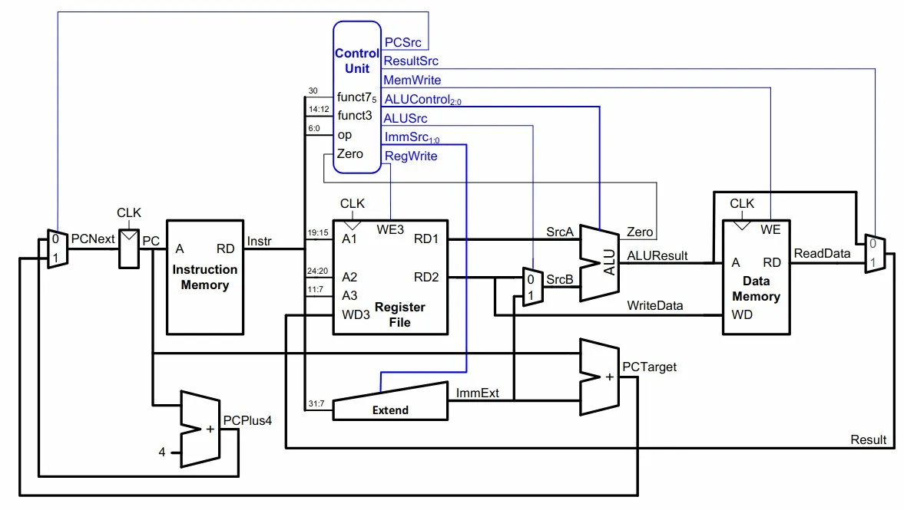

email: kim [dot] ryan8 [at] northeastern [dot] edu
github: github.com/ryanmkim
linkedin: linkedin.com/in/ryankim
resume: resume.pdf

Designed, implemented, and verified a 16-bit single-cycle RISC-V processor in SystemVerilog, synthesized onto a Xilinx PYNQ-Z2 FPGA. The processor was built incrementally across a seven-lab sequence in EECE 2323 (Digital Logic Design) at Northeastern University, with each lab adding a major functional unit to the datapath. The final system executes arithmetic, logical, memory access, and branch instructions, and was validated end-to-end by running a signed 8-bit multiplier written in RISC-V assembly directly on the hardware.
Datapath ArchitectureThe processor follows a classic single-cycle microarchitecture where each instruction completes in a single clock cycle. The top-level datapath connects the following modules, all designed from the register-transfer level:
The ALU supports addition, subtraction, bitwise AND/OR/XOR, shift operations, and set-less-than comparisons, with overflow detection logic used to flag arithmetic exceptions and drive branch decision signals. The register file is an 8-entry, 16-bit design with two read ports and one write port, clocked on the debounced pushbutton edge for single-step execution, with write-enable controlled by the instruction decoder's RegWrite signal.
The instruction decoder extracts register addresses, immediates, and branch offsets from the 16-bit instruction word and generates all control signals: RegWrite, ALUSrc1/2, ALUOp, MemWrite, MemToReg, and RegDst. Immediate and nzimm fields are sign-extended to support negative operands in arithmetic and branch target computation.
Instruction memory is a 256-deep ROM initialized from a .coe file generated by hand-assembling RISC-V programs, addressed by the 8-bit program counter output. Data memory is a 256-deep RAM for load/store operations, clocked on the debounced pushbutton. A MUX selects between ALU output and memory read data for register writeback, controlled by MemToReg.
The program counter is 9 bits wide with two modes of operation: sequential increment (PC + 1) and branch target computation (PC + sign-extended offset). A take_branch signal, derived from ALU condition flags, selects between the two paths. The offset is extracted by a mapper function from the instruction word and represented in two's complement.
Control PathThe datapath uses several multiplexers to route data based on instruction type. ALUSrc1 and ALUSrc2 select between register read data and immediate values as ALU inputs. A writeback MUX chooses between ALU results and data memory output. The instruction decoder generates all control signals combinationally from the opcode and function fields, requiring no microcode or state machine—consistent with the single-cycle design.
VerificationThe processor was verified on-FPGA using Vivado's Virtual I/O (VIO) probes and a seven-segment display driver. VIO allowed real-time monitoring of internal signals—register contents, ALU output, control signals, program counter state, and branch decisions—while single-stepping through programs with a debounced pushbutton clock.
The primary test program was a signed 8-bit multiplier implemented in RISC-V assembly using registers x8–x11. The algorithm handles both positive and negative operands in two's complement using separate up-counter and down-counter loops to manage sign. The assembly was hand-translated to machine code, loaded into instruction memory via a .coe file, and executed on the hardware. Correct multiplication results were confirmed across multiple input combinations by inspecting register state through VIO.
Parallelized translation of DNA/RNA sequences to amino acid chains using OpenMP. The pipeline encodes nucleotide sequences into a compact bit-packed representation, distributes codon translation across threads, and validates correctness against a reference Python implementation. Tested on the full SARS-CoV-2 genome (~29,903 bases, ~9,967 codons).
EncodingEach nucleotide is mapped to a 2-bit index (T/U = 0, C = 1, A = 2, G = 3). A three-base codon is then packed into a single 6-bit integer by shifting and OR-ing the three indices together, producing a direct lookup index into a flat 64-entry codon table that maps every possible triplet to its corresponding amino acid (or stop codon).
static const char CODON_TABLE[64] = { 'F','F','L','L', 'S','S','S','S', 'Y','Y','*','*', 'C','C','*','W', 'L','L','L','L', 'P','P','P','P', 'H','H','Q','Q', 'R','R','R','R', 'I','I','I','M', 'T','T','T','T', 'N','N','K','K', 'S','S','R','R', 'V','V','V','V', 'A','A','A','A', 'D','D','E','E', 'G','G','G','G' }; static inline int codon_idx(const char* s) { int a = base_idx(s[0]), b = base_idx(s[1]), c = base_idx(s[2]); if (a < 0 || b < 0 || c < 0) return -1; return (a << 4) | (b << 2) | c; }Parallel Translation
The full nucleotide sequence is divided into codon-sized chunks and distributed across threads using OpenMP's static scheduling. Each thread independently translates its chunk of codons by indexing into the codon table, with no synchronization needed since each output position is written by exactly one thread.
static std::string translate(const std::string& seq) { int len = (int)seq.size(); int num_codons = len / 3; std::string protein(num_codons, 'X'); const char* raw = seq.c_str(); #pragma omp parallel for schedule(static) for (int c = 0; c < num_codons; c++) { int idx = codon_idx(&raw[c * 3]); protein[c] = (idx >= 0) ? CODON_TABLE[idx] : 'X'; } return protein; }Validation
A separate Python script performs the same codon-to-amino-acid translation using Biopython's standard codon tables and compares the output character-by-character against the C++ result. This cross-language check confirms that the bit-packing scheme and codon table are correct, and that the parallel decomposition doesn't introduce off-by-one errors at chunk boundaries. Validated on the full SARS-CoV-2 reference genome (~29,903 bases, ~9,967 codons).
Splits an image into tiles and applies a filter to each tile in parallel using OpenMP.
The input image is divided into a grid of 64×64 pixel tiles, and each tile is processed concurrently. Supported filters include grayscale, threshold, sharpen, edge detection, Gaussian blur, and a passthrough (none) option. Uses thread-level parallelism and local memory buffers to avoid race conditions during tile processing and writing.
At UMass Chan Medical School in the Schiffer Lab, I worked on a structural biology project focused on how influenza viruses enter host cells. The broader goal was to understand how the organization of proteins on the viral surface changes during the earliest stages of infection, and how these changes can be captured directly from 3D cryo-electron tomography data. This required combining experimental structural biology with computational analysis, since influenza virions are highly variable in shape and their surface proteins are densely packed and difficult to analyze manually at scale.
Publication: Q.J. Huang, R. Kim, K. Song, N. Grigorieff, J.B. Munro, C.A. Schiffer, & M. Somasundaran. Proc. Natl. Acad. Sci. U.S.A. 122(16): e2426427122 (2025). doi:10.1073/pnas.2426427122